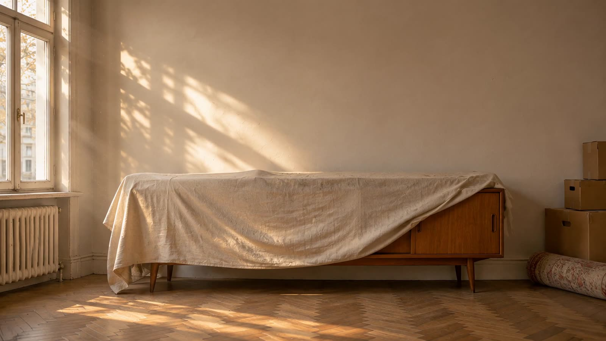

Wir kaufen Ihre
Vintage-Möbel
Dänisches Design, Mid-Century und Teakmöbel aus den Jahren 1940 bis 1980. Fotos senden, Angebot erhalten, wir holen ab.
Gebrauchsspuren sind kein Problem
Wir arbeiten jedes Stück selbst auf. Deshalb kaufen wir auch Möbel mit Patina, alten Bezügen oder Aufarbeitungsbedarf.
Vom Nachlass in den Showroom
In drei Schritten zum fairen Angebot
Schnell, unkompliziert und persönlich. Sie müssen nichts vorbereiten außer ein paar Fotos.
Fotos senden
Per WhatsApp oder Formular. Einfache Übersichtsfotos reichen. Falls vorhanden: ein Foto vom Stempel oder Etikett.
Angebot erhalten
Wir schätzen Designer, Hersteller, Holz und Zustand ein und machen Ihnen ein konkretes Angebot. [kostenlos und unverbindlich – bestätigen]
Bezahlung & Abholung
Wir vereinbaren einen Termin, holen ab und bezahlen per Überweisung, PayPal oder nach Vereinbarung bar. [Zeitpunkt der Zahlung]
Designermöbel, Designklassiker und Vintagemöbel
Wir suchen skandinavische und dänische Möbel aus Teakholz, Eiche, Palisander und Nussbaum, mit oder ohne bekannte Herstellerangabe.
Ob einzelnes Sideboard, ein Satz Esszimmerstühle oder eine komplette Einrichtung aus einem Nachlass: Schicken Sie uns Fotos, wir sagen Ihnen schnell, ob und zu welchem Preis wir ankaufen.
Holzarten
Möbelarten
Möbel dieser Designer kaufen wir an
Eine Auswahl. Auch weniger bekannte Entwerfer und Stücke ohne Zuordnung sind für uns interessant.
- Ole Wanscher
- Grete Jalk
- Hans J. Wegner
- Finn Juhl
- Børge Mogensen
- Arne Jacobsen
- Poul Kjærholm
- Kaare Klint
- Nanna Ditzel
- Jørgen Ditzel
- Verner Panton
- Peter Hvidt
- Orla Mølgaard-Nielsen
- Ib Kofod-Larsen
- Mogens Koch
- Mogens Lassen
- Flemming Lassen
- Frits Henningsen
- Tove Kindt-Larsen
- Edvard Kindt-Larsen
- Ejner Larsen
- Aksel Bender Madsen
- Bodil Kjær
- Peder Moos
- Helge Vestergaard Jensen
- Erik Ole Jørgensen
- Preben Fabricius
- Jørgen Kastholm
- Bernt Petersen
- Poul Henningsen
- Kaj Gottlob
- Vilhelm Lauritzen
- Frits Schlegel
- Gunnar Aagaard Andersen
- Jens Harald Quistgaard
- Steen Eiler Rasmussen
- Tyge Hvass
- Svenn Eske Kristensen
- Ernst Kühn
- Kai Kristiansen
Von Omann Jun bis Getama
Hersteller mit umfangreichem Programm aus Teak, Eiche und Palisander, die für unseren Ankauf besonders relevant sind.
Ein Händler mit eigener Werkstatt
Wir sind Händler für Vintage- und Designmöbel aus Berlin, mit eigener Werkstatt und Polsterei.
Weil wir selbst aufarbeiten und neu polstern, können wir auch Stücke ankaufen, die andere ablehnen.
- Persönliche Einschätzung durch Fachleute, keine Online-Bewertungsmaschine
- Ankauf einzelner Möbel, ganzer Einrichtungen und Sammlungen
- Auch Möbel ohne Etikett und mit Gebrauchsspuren
- Abholung in Berlin, Brandenburg und deutschlandweit nach Absprache
- Diskrete Abwicklung bei Nachlass und Wohnungsauflösung
- Bezahlung per Überweisung, PayPal oder nach Vereinbarung bar
Persönlich statt anonym
[Name des Ansprechpartners] kümmert sich um jede Anfrage selbst.
[Platzhalter: 2–3 Sätze zur Person, seit wann im Vintage-Handel, Schwerpunkt dänisches Design]
Showroom: [Straße Hausnummer], [PLZ] Berlin
Erreichbar: [Mo–Fr 10–18 Uhr, Sa 11–16 Uhr]
Was wir zuletzt angekauft haben
[Platzhalter: 3–6 echte Ankäufe mit Foto, Designer/Hersteller und Stadt – nur mit Erlaubnis der Verkäufer]
Teak-Sideboard
[Beispiel 1]
Sesselpaar
[Beispiel 2]
Esszimmer aus Nachlass
[Beispiel 3]
Gut zu wissen
Ihre Frage ist nicht dabei? Schreiben Sie uns einfach.
Kaufen Sie auch einzelne Möbelstücke an?
Ja. Wir kaufen sowohl einzelne Stücke wie ein Sideboard, einen Sessel oder einen Satz Esszimmerstühle als auch ganze Einrichtungen und Sammlungen.
Kaufen Sie Möbel ohne Herstellerkennzeichnung?
Ja. Viele hochwertige dänische Teak- und Eichenmöbel tragen kein Etikett mehr. Schicken Sie uns einfach Fotos, wir schätzen Herkunft und Qualität für Sie ein.
Sind beschädigte oder durchgesessene Möbel interessant?
Oft ja. Wir haben eine eigene Werkstatt und Polsterei. Gebrauchsspuren, verblasste Oberflächen oder alte Bezüge sind kein Ausschlussgrund.
Wie wird der Ankaufspreis ermittelt?
Wir berücksichtigen Designer, Hersteller, Modell, Holzart, Zustand und die aktuelle Nachfrage. Sie erhalten nach Ihren Fotos ein konkretes Angebot.
Ist die Abholung kostenlos?
[Platzhalter: Abholung beim vereinbarten Ankauf kostenlos – bitte bestätigen]
Übernehmen Sie Tragen und Abbau?
[Platzhalter: Wir tragen und bauen bei Bedarf ab – bitte bestätigen] Geben Sie im Formular gern Etage und Aufzug an.
Wie schnell können Sie abholen?
In Berlin und Brandenburg oft innerhalb weniger Tage, deutschlandweit nach Absprache. [Platzhalter: konkrete Zeiten bestätigen]
Wann und wie wird bezahlt?
[Platzhalter: Zeitpunkt der Bezahlung] Wir zahlen per Überweisung, PayPal oder nach Vereinbarung bar.
Kaufen Sie in ganz Deutschland an?
Ja. Unser Schwerpunkt liegt auf Berlin und Brandenburg, wir kaufen aber deutschlandweit an.
Welche Möbel kaufen Sie nicht an?
[Platzhalter: z. B. Spanplatten- und Massenmöbel, Einbauküchen, stark von Schädlingen befallene Stücke] Eine Entrümpelung oder Entsorgung bieten wir nicht an.
Möbel verkaufen
Nur Kontakt und Postleitzahl sind Pflicht. Alles andere hilft uns, schneller ein Angebot zu machen.
Am schnellsten geht es per WhatsApp: Das Formular öffnet Ihre Nachricht vorausgefüllt, Sie hängen nur noch die Fotos an.
Telefon: +49 30 0000 0000
E-Mail: ankauf@vintagemoebelankauf.de